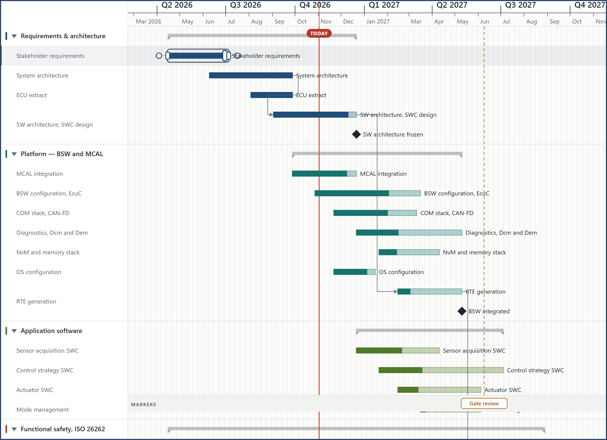
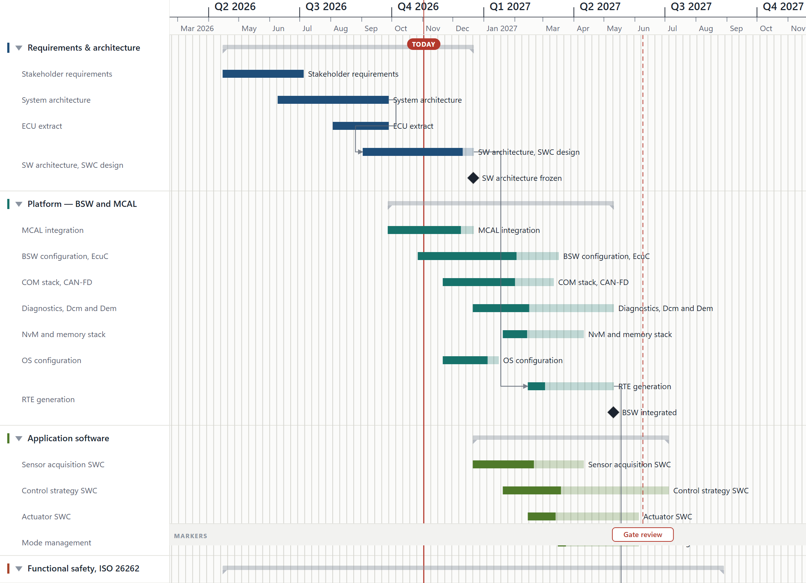
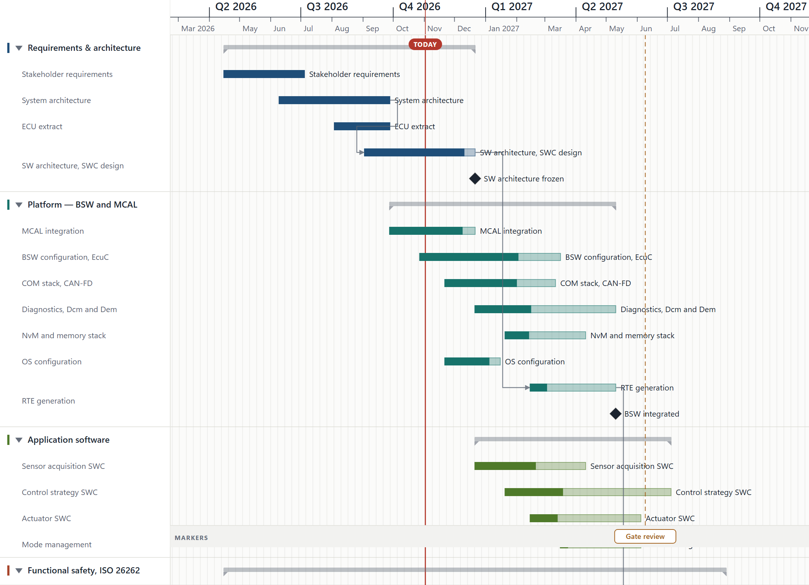
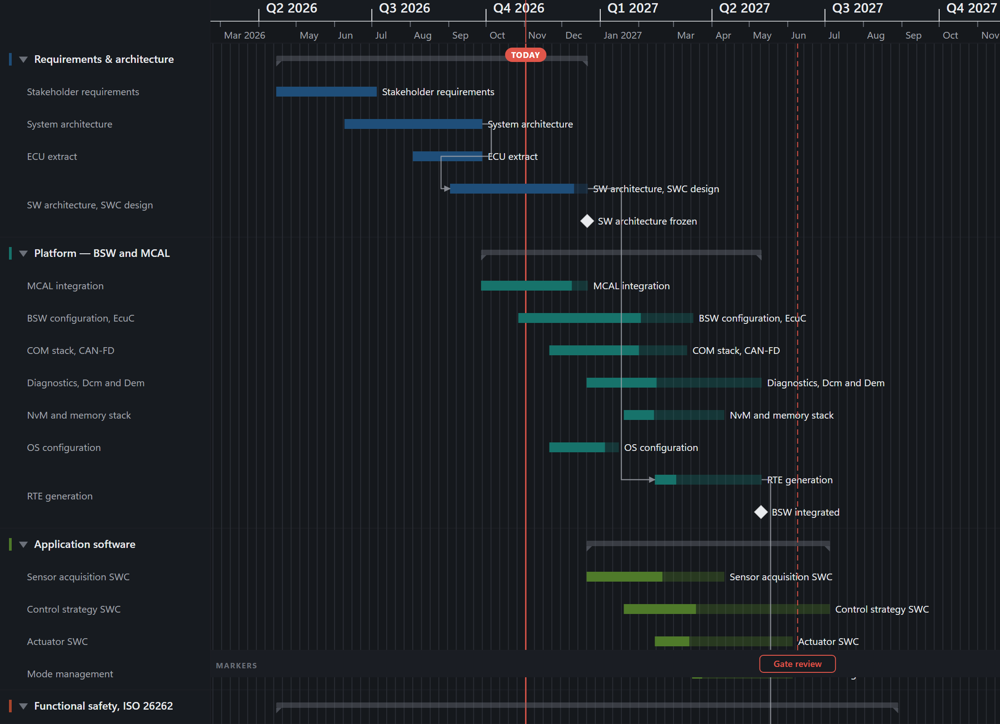
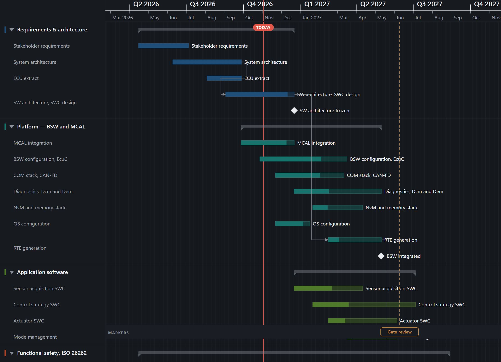

An independent round of polish, taken on while the owner was away. Nothing here was reported: it was found by driving the app and measuring it — six dimensions of behaviour against the running build, and the current standards from the design systems the industry actually publishes. The chart now answers a finger and a keyboard, its calendar reads as a reference again, and five things that were quietly wrong are right.
Hovering a bar drew a grip at each end, inviting you to take one — and
moving onto that grip made it vanish. The hover lived on the bar’s body
rect, and the grips, the progress handle and the anchors are
siblings painted over it, so touching any of them fired
mouseleave on the body. The bar stopped being active, the
grips stopped being drawn, and data-pp-live dropped — which
under SRS-EDIT-079 demotes a grip from rank 60 to rank 8 and hands the
press to the bar body underneath. The handle disappeared exactly as the
hand arrived, and the drag moved the task instead of resizing it. The
cursor said ew-resize the whole time.
Walking the pointer from a bar’s middle out to its end, sampled per pixel:
| offset from the end | grips drawn | pp-live | a press would |
|---|---|---|---|
| −30px | 2 | null | move the bar |
| −10px | 0 | null | move the bar |
| −6px | 2 | 1 | set the progress |
| −3px … 0px | 0 | null | move the bar |
| +1px … +3px | 0 | null | resize |
| +4px | 0 | null | nothing at all |
Hover belongs to the whole task, not to one rect inside it. On a
<g>, moving between children is not leaving. Four
approaches were then driven in from outside, along the bar and from
above; before the fix two of the four moved the task, and all four now
resize it. The resize band went from 3px to 7px, and the 4px of dead
space past each end is gone.
The drag loop was built on mousedown and a window
mousemove — fifteen such sites, and no
pointerdown, setPointerCapture or
touch-action anywhere in src/. A finger sends
none of those. The product ships into a Microsoft Office task pane and
onto tablets, and its primary verb did not answer one.
The handlers did not change — PointerEvent extends
MouseEvent, so every one reads the same
clientX it always did. Only the event names changed, plus
touch-action: none on the plot so the browser stops taking
the gesture for a scroll, and pointercancel so a drag the
system takes away does not hang with its listeners attached. The mouse
names are kept behind a feature test for environments with no
PointerEvent — which in practice means jsdom, where the unit
suite drives this same code.
Forty-eight elements were focusable: six in the header, forty in the
side panel, and none in the chart. The chart’s
<svg> had no role, no
aria-label and no tabindex. Every editing
shortcut the app documents — F2 to rename, Del to delete, Enter for
details, the arrow nudges — acts on the selection, and a
selection could only be made with a pointer. So the whole documented
keyboard was unreachable without a mouse. The picture the app
exports already carried role="img"; the chart the
planner edits had no name at all.
The chart is one tab stop now, named from the document and its size, and it comes before the side panel. Down and up move the selection through the chart in reading order; left and right still nudge what is selected, which is the axis each pair already belonged to. Escape clears. A polite live region says what was picked and when it runs — eight of nine ordinary actions used to announce nothing whatsoever.

Four things at once. --color-today and
--color-deadline were the same #B3382C, so the
line that says now and the lines that say this is due
differed only in that one was dashed — and a dash is the first thing a
print or an export loses. The default roadmap drew 91 vertical
rules 10.1px apart, a texture rather than a reference, at
full ink. --color-text-dim carried real text at
3.00:1 on the sheet and 2.77:1 on a subtle fill, under AA
in both themes. And a task at 0% painted rgb(194,206,216)
on a rgb(251,251,250) sheet — 1.55:1, which reads as
disabled, and 0% is what the first bar anyone draws looks like.




The grain of the grid is still the planner’s setting and still never the zoom — two tests say so, and both still pass. What changed is the ink: rules far enough apart to count are drawn at full weight, and rules that crowd fade back. The deadline takes the amber the print theme has used since it was designed; the screen themes simply never followed. An empty bar gains a hairline in its own colour, because weight alone cannot fix it — even a solid amber bar is about 2.9:1 on this sheet, and an edge works at any fill.
The layout memo was keyed on the whole document object. Typing one
character into the document title — which
layoutDocument never reads — re-laid-out every row, task,
milestone, bracket and dependency, recomputed the critical path, and
re-rendered 675 SVG nodes.
The memo now names the seven fields the engine actually reads, taken from its source rather than guessed, and a test reads both files and fails the moment they stop agreeing — narrowing a memo is the kind of optimisation that goes stale in silence.
I first measured this at 1,446ms of blocked main thread for ten keystrokes, and nearly shipped that as the headline. It was wrong: that reading was taken while seven research agents were running. On a quiet machine both builds report 0ms, because 39 rows is too little work to see at full speed.
Measured properly — both builds, alternating, under identical 6× CPU throttling — narrowing the memo on its own changed nothing: 3,855ms against 3,749ms, indistinguishable. React re-renders a child whenever its parent renders, whatever the props are, so the layout had stopped being recomputed while the whole chart was still being reconciled. The reconciliation was the cost. Memoising the five layers that do not change while you type is what actually moved it.
Clicking a bar selects the bar and the row it sits on, so the
gutter lights up with it — one selection shown in two places. Four
files worked that out separately, each slightly differently, and the
places that never worked it out are where things broke. F2
asked for items.length === 1, and the gesture almost
everyone uses gives it two, so the rename printed in the shortcuts
sheet did nothing. The Selection panel counted the companion and
printed one more than the footer. The right-click Delete removed
one of four selected bars, posted no notice, and left the footer
reading “4 selected”. And ctrl-click could add a bar to a
selection but never take one out: the test was
if (!isSelected(id)) add(…).
The companion is now recorded as one — companionFor — and a
single derivation, selectionSubjects, answers “what did the
planner actually pick”. Four ad-hoc versions deleted. Every kind of
element reports its own selected state in the DOM too; before, only task
bars did, so with a milestone selected the footer said “1 selected” and
nothing said which.
deleteRow hand-rolled its cascade and dropped the row, its
tasks and its milestones — but not the dependencies those tasks were
part of. Deleting a row from the context menu left records pointing at
tasks that no longer existed, and the file carried them. The
delete_row op the agent bridge uses has done it correctly
all along, two lines below a comment saying that a user action and an
agent action must not diverge.
Enter is bound to “open details”, and the global key handler resolved
it and called preventDefault() — so the browser never
activated the button the user had tabbed to. Measured on three of them:
Enter fired zero click events, and the keydown came back
defaultPrevented: true. A keyboard user could reach every
control in the chrome and press none of them.
WCAG 2.2 SC 2.5.8 asks for 24px, and these sit against each other so the Spacing exception does not apply. A grip was hit over 7×22, the progress handle 10×22, and the dependency anchor 10×10 with no enlarged area at all. Widening a grip inward would eat the body that carries the rename, so they reach outward instead, into space that was empty — and that also closes the 4px band past each end where nothing answered a press.
The header’s background is --color-bg-panel,
and the button hover painted --color-bg-panel. White on
white: 25 of 48 controls repainted zero pixels. Milestones, markers
and rows had no hover state at all.
Opening the shortcuts sheet left activeElement on BODY,
and ten Tab presses put focus outside the dialog ten times out of
ten — on chrome under a scrim. The command palette has always done
this correctly; that behaviour is now shared so the others cannot
drift from it.
The whole prefers-reduced-motion block was one selector,
while 113 elements kept 26,530ms of declared transition between them.
Panning a large object is the trigger the guidance names first. What
moves is now stopped; the cross-fades that carry meaning stay, because
the rule is remove, reduce or replace.
reduce → 0A deadline is amber now. It was the same red as TODAY in every screen theme. The amber is the one the print theme already used. If you want the deadline to stay red, the two still need to differ some other way than a dash.
The grid fades instead of thinning. I tried two other answers first and backed out of both: deriving the default grain from the document’s scale also moves every mark that anchors to “its column”, and simply refusing to draw a crowded grid broke “the plot has vertical rules out of the box”. Fading the ink keeps the grain you chose, keeps the rules present, and moves nothing.
Arrow up and down now move the selection. They were unbound. Left and right still nudge. If you would rather up and down carried a bar to the row above or below, say so — that is the other reasonable reading, and it would need a different key for navigation.
An empty bar has a hairline. Every bar does, in its own colour. It is what makes a 0% task visible, but it is a change to how every chart looks.
The keyboard-shortcuts button is gone below 560px — that shipped in v2.34.2 and is unchanged here; noted because it is the one control the phone header gives up.
Ninety-three defects were found across six measured dimensions — and sixty-four behaviours were checked and found genuinely sound, which is worth saying too. Twenty-two of the defects are fixed here. The rest are in the backlog, measured, with the worst first. These three are data-loss or dead-end bugs and deserve a release of their own:
.json or .yaml
rewrites it as HTML under its original name — and the app can then
never read it again. 604 bytes of JSON came back as a 420KB HTML file
still called sprint.json.
isISODate is a shape test, so 2026-13-45 loads
and the viewport goes to NaN: no axis, no bars, nothing to click.
Also waiting: the restore banner returns on every load even on a fresh
profile; apply_batch accepts documents the loader then
refuses to open; the context menu is a role="menu" with no
menu keyboard behaviour; the stylesheet has no :active rule
at all; and a dependency cycle silently empties the critical path.
Real numbers, including the failures and the flakes. Every “before” here
was captured from a git worktree at 145565f served on a
second port — not illustrated, not remembered.
| Gate | Result |
|---|---|
tsc -b | clean |
npm run lint | 0 errors, 18 warnings (the pre-existing baseline) |
npm test | 476 passed, 0 failed, across 60 files (17 of them new or rewritten here) |
npm run test:e2e | 303 passed, 1 failed, 239 skipped, across 543 tests and three projects (desktop, iPad/WebKit, iPhone) |
npm run build:template | PowerRoadmap.html, 427.60 kB (gzip 126.96 kB) — up 6.1 kB on v2.34.2 |
| the built file, opened from disk | 14 of 14 claims verified, including the version in the bytes |
The one failure was the dark-theme panel-contrast assertion, early in the run. It did not reproduce: the same check run again on a settled server reports the worst panel label at 6.83:1 in dark and 5.35:1 in light, against a 4.5:1 threshold, and the built file measures 0 of 134 text runs under AA in both themes. Recorded as unreproducible rather than explained away. Separately, one tablet dependency test flaked once in roughly fifty runs and the previous build passed the same spec 20 of 20, so it is not attributed to this change; both are in the backlog. The suite also spends five to ten minutes in teardown after the last test finishes — 20 runs of one spec take 19.3s without the config's webServer block and 10.3m with it, which is the cause and is now recorded.